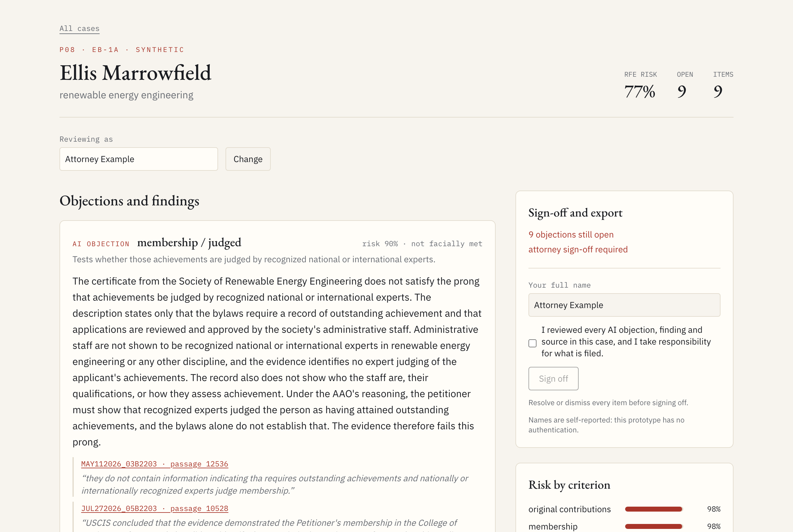
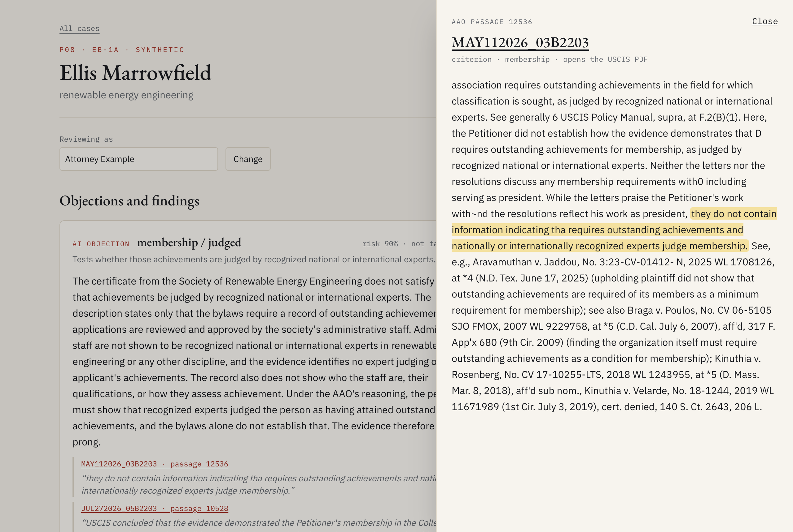

Adjudicate reads an extraordinary-ability petition the way a skeptical USCIS officer would. It writes the strongest objection on every criterion the petition claims, backs each one with the Administrative Appeals Office's own reasoning, quoted word for word, and nothing leaves until an attorney resolves every objection and signs off.
For each criterion, and each half of the two-part ones, it argues the request for evidence an officer would write: invitations with no proof the review happened, a "leading role" letter that never describes the role, praise with no mechanism behind it.

Citations may only point at passages that were actually retrieved, and the quote must appear verbatim. Click one and the full AAO passage opens with the quoted words highlighted. A prong it cannot ground is shown as "not reviewed", never quietly passed.

Each objection is resolved or dismissed with a note, in an append-only log the database refuses to edit. The memo exports only after a sign-off that postdates the last change, and the server enforces it, not just the button.
a second tab with an old viewwrite refusedEvery EB-1A merits decision the AAO issued from June to September 2026, reduced to facts only, with retrieval cut off before 1 June. 5,864 cited passages were checked against the cutoff: zero leaks.
| Criteria the AAO decided | F1 | Recall | Precision | AUROC | F1, fitted threshold |
|---|---|---|---|---|---|
| Adjudicaterisk ≥ 0.5; threshold fitted on June, scored Jul–Sep | 0.80 | 0.99 | 0.67 | 0.66 | 0.79 |
| Always say "not met"the base rate | 0.78 | 1.00 | 0.65 | n/a | 0.79 |
| Copy the Director's findingan oracle no pre-filing tool has | 0.83 | 0.78 | 0.90 | n/a | 0.84 |
Each one opens full screen: pan, zoom, switch light and dark, and trace a relationship by hovering it. Start with the architecture, then follow whichever part you are curious about.
Python owns the data, TypeScript the agent and UI; one Postgres.
Three of ten criteria, then a holistic final merits look.
Wrong criterion, half a criterion, assertion without mechanism, waiver.
A polite crawler that honors the 10-second crawl delay.
OCR repair, structure, and per-criterion verdicts with quotes.
Every table, column and key behind the search.
Vector and full-text search, fused with reciprocal rank fusion.
Every citation validated after generation; one retry, then dropped.
Boilerplate, independence, and the Kazarian step two.
Facts-only extraction, leak guards, metrics and baselines.
A calendar split, on a timeline.

Phase 0's design, to compare with what was built.
Survivorship bias. AAO decisions exist only for denied, appealed petitions, so "not met" is usually right.
The synthetic gates are easy. Phases 4 to 6 ran on generated petitions with planted flaws; they prove the machinery, not generalization.
Labels are not an attorney's. They were checked against a hand-labelled gold set and a blind re-label, not by immigration counsel.
It is a prototype. No authentication; reviewer names are self-reported. Synthetic petitions only. Not legal advice.